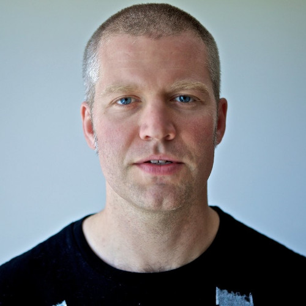
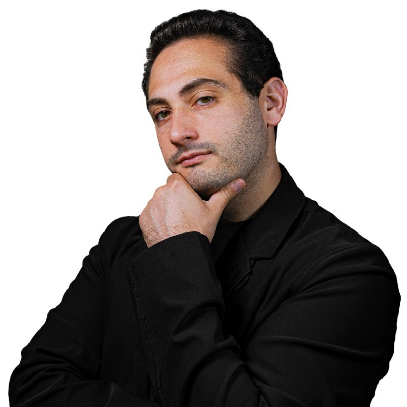

Alumni
Explore IDM connections, career paths, and people working across design, technology, and media.
Featured Connections
R. Luke DuBois
Works across art, data, music, and technology through interdisciplinary and experimental projects.

Scott Fitzgerald
Works across creative and technical spaces, contributing to projects involving media, design, and digital systems.

Eric Maiello
Focuses on global strategy, operations, and data-driven decision-making across organizations and teams.

Hriday Agrawal
Interested in UX, 3D design, web development, and building interactive digital experiences.